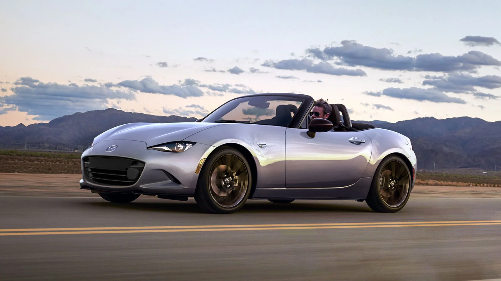

El Porsche 911 es el estándar de oro y el icono indiscutible de los coches deportivos mundiales, manteniendo su legendaria silueta y la configuración de motor trasero desde 1963. En su generación actual (992), el modelo Carrera cuenta con un motor bóxer de seis cilindros y 3.0 litros biturbo que entrega desde 394 caballos de fuerza. Este propulsor va asociado a la magistral transmisión automática de doble embrague PDK de 8 velocidades, logrando una aceleración instantánea y una entrega de potencia lineal que desafía las leyes de la física gracias a la tracción que ofrece el peso sobre el eje trasero. Más allá de su velocidad pura, el 911 destaca por una precisión de guiado quirúrgica y una versatilidad que ningún otro superdeportivo puede igualar. Dato extra: Recientemente, Porsche ha revolucionado el linaje de este modelo al introducir en el 911 GTS el sistema T-Hybrid, un motor híbrido de alto rendimiento derivado de las carreras que utiliza un turbocompresor eléctrico y una batería ligera. Esto demuestra que el "Nueveonce" es capaz de evolucionar hacia la electrificación sin perder ni un ápice de su pureza dinámica y su emocionante comportamiento en pista.
El Chevrolet Corvette Stingray (C8) marcó el cambio más radical en la historia del modelo al abandonar el motor delantero para adoptar una configuración de motor central-trasero. Este movimiento estratégico transformó al clásico muscle car americano en un auténtico superdeportivo exótico capaz de mirar de tú a tú a las firmas europeas. En el corazón de esta bestia ruge el motor LT2 V8 atmosférico de 6.2 litros que produce hasta 495 caballos de fuerza, acoplado por primera vez a una transmisión de doble embrague de 8 velocidades que catapulta al coche de 0 a 100 km/h en solo 3 segundos. Colocar el motor detrás de la cabina mejoró drásticamente la distribución de pesos, otorgándole al C8 una tracción asombrosa al acelerar y una agilidad en curva nunca antes vista en un Corvette. El interior dio un salto cuántico en calidad y ergonomía, envolviendo al conductor en una cabina inspirada en los aviones de combate. Sigue siendo el rey indiscutible de la relación calidad-precio en el mundo del alto rendimiento, ofreciendo sensaciones y cifras de infarto por una fracción del costo de sus rivales del viejo continente.
.jfif.jpeg)
Dijiste Toyota GR SupraEl Toyota GR Supra es la quinta generación del legendario coupé deportivo de la firma japonesa, desarrollado de forma conjunta con BMW por su división de competición Toyota Gazoo Racing. El año modelo 2026 marca un hito histórico de despedida mediante el lanzamiento de su GR Supra Final Edition, la última oportunidad para adquirir este ícono antes del cese definitivo de su producción.Especificaciones de RendimientoMotor de seis cilindros: Bloque turboalimentado de 3.0 litros en línea que entrega un rendimiento sobresaliente.Potencia y torque: Produce 382 caballos de fuerza y 368 lb-pie de torsión directo al eje trasero.Aceleración veloz: Registra un tiempo de aceleración de 0 a 100 km/h en solo 3.9 segundos.Transmisión: Opciones disponibles en manual de 6 velocidades o automática deportiva de 8 marchas.Modos de manejo: Conmutador integrado para perfiles de conducción Normal o Sport orientados a pista.Características Destacadas de la "Final Edition"Estética exterior agresiva: Añade rines de 18 pulgadas en negro mate, cálipers de freno rojos y un alerón tipo cola de pato construido en fibra de carbono.Cabina orientada a la pista: Incorpora asientos deportivos con 12 ajustes eléctricos, cinturones de seguridad rojos y costuras de contraste a juego.Tecnología a bordo: Pantalla táctil de 8.8 pulgadas, compatibilidad inalámbrica con Apple CarPlay y sistema de audio premium JBL con 12 bocinas.Seguridad activa: Suite de asistencias al conductor Toyota Safety Sense 3.0 integrada en todas sus unidades de producción.Para mercados latinoamericanos como el mexicano, el vehículo se encuentra listado en la página oficial de Toyota México con precios que inician formalmente desde los $1,508,900 M.N.Si quieres, te puedo ayudar con más detalles:¿Te gustaría conocer las diferencias dinámicas de chasis respecto al BMW Z4?¿Quieres comparar los tiempos en pista contra el Nissan Z Nismo?¿Necesitas ver detalles sobre las opciones de colores mate disponibles?10 sitiosToyota GR Supra, simplemente, el deportivoDesarrollado por Toyota Gazoo Racing, el GR Supra GT4 es un ganador comprobado en la pista, gracias a su alto y rápido rendimiento...Toyota ESToyota GR Supra - WikipediaTraducido — Actuación. ... Una prueba realizada por Car and Driver en diciembre de 2019 registró la aceleración del 3.0 Modelo L de 0 a 97 km/Wikipedia2026 Toyota GR Supra Final Edition - Jaime Gabaldoni5 may 2026 — una vez entramos encontramos una buena integración entre los paneles no hay mayores cosas lo que sí encontramos es un panel donde ...1:06YouTube·Jaime GabaldoniMostrar todoDijiste que esEl Toyota GR Supra es un automóvil deportivo biplaza de tracción trasera.Aquí te detallo qué significa este auto en el mercado actual:Origen e IdentidadEs un coupé puro: Diseñado exclusivamente para el alto rendimiento, con motor delantero y tracción en las ruedas traseras.Co-desarrollo con BMW: Toyota aportó el diseño y la puesta a punto del chasis, mientras que BMW proveyó el motor y la plataforma básica (compartida con el BMW Z4).Sello Gazoo Racing: Las siglas "GR" indican que fue desarrollado por la división de carreras de Toyota para garantizar un manejo deportivo auténtico.Legado HistóricoQuinta generación: Es el heredero directo del legendario Supra de los años 90 (Mk4), famoso por su aparición en la cultura pop y los videojuegos.Fin de una era: La versión actual representa la despedida de este modelo con motores de combustión interna tradicionales.Si te interesa profundizar, puedo ayudarte con los siguientes datos:¿Te gustaría conocer la historia y evolución de sus generaciones anteriores?¿Quieres saber cómo funciona su tecnología de asistencia en curvas?¿Prefieres revisar los costos de mantenimiento estimados?13 sitiosToyota GR Supra: un modelo puramente deportivo | Toyota27 abr 2021 — TOYOTA GR SUPRA Sólo tienes que probarlo. · El nuevo Supra ( Toyota GR Supra ) tiene experiencia en competición. Está diseñado par...Grupo La GrajeraToyota GR Supra, una auténtica bala japonesa18 jul 2019 — Biplaza, de propulsión trasera, con motor turbo... La misma receta que las cuatro generaciones anteriores del Supra ( Toyota GR Su...ExpansiónPotente desempeño, llamativo estilo: Toyota GR Supra 2024 USA - español - USA18 ago 2023 — Share this article PLANO, Texas, 18 de agosto de 2023 /PRNewswire-HISPANIC PR WIRE/ -- Con su atractivo estilo deportivo y su pote...PR NewswireMostrar todoDijiste HAZMELO EN UN SOLO PARRAFOEl Toyota GR Supra es un automóvil deportivo biplaza de tracción trasera desarrollado conjuntamente por Toyota Gazoo Racing y BMW, combinando el diseño y la puesta a punto de chasis japonesa con la ingeniería de motorización alemana. Como la quinta generación de un linaje icónico nacido en los años 70 y popularizado en la cultura pop de los 90, este coupé puro destaca por su motor de seis cilindros en línea turboalimentado de 382 caballos de fuerza que logra acelerar de 0 a 100 km/h en solo 3.9 segundos. Actualmente representa la cúspide y el cierre de una era para los deportivos de combustión de la marca, ofreciendo una experiencia de conducción purista orientada a la pista mediante opciones de transmisión manual o automática y tecnología avanzada de asistencia activa.

El Mazda MX-5 Miata es la prueba viviente de que no se necesitan cientos de caballos de fuerza para crear el coche más divertido del mundo. Diseñado bajo la filosofía japonesa Jinba-Ittai (la unión del jinete y su caballo), este legendario descapotable biplaza destaca por su ligereza obsesiva, deteniendo la báscula en apenas 1,000 kilogramos. Su motor atmosférico de 2.0 litros Skyactiv-G entrega 181 caballos de fuerza directamente al eje trasero, una cifra que cobra vida gracias a una de las mejores transmisiones manuales de 6 velocidades del mercado, famosa por sus recorridos cortos y mecánicos. Con una distribución de peso perfecta de 50:50, el Miata ofrece una agilidad pura y una comunicación directa a través de la dirección que te hace sentir cada imperfección y límite de adherencia del asfalto. No busca romper récords de velocidad en línea recta, sino maximizar la sonrisa del conductor en cualquier carretera de curvas. Dato extra: La generación actual (ND) ha recibido actualizaciones recientes que incluyen un modo de control de estabilidad "DSC-Track" optimizado para circuitos y un nuevo diferencial de deslizamiento limitado asimétrico, refinando aún más su noble y predecible comportamiento dinámico.

El BMW M2 es el heredero espiritual de los coupés deportivos compactos y puros de la firma bávara, consolidándose como el modelo más rebelde y pasional de la división M. Bajo su musculoso y ensanchado capó se esconde el motor S58 de seis cilindros en línea y 3.0 litros con tecnología M TwinPower Turbo, que desata una impresionante potencia de 480 caballos de fuerza dirigida exclusivamente a las ruedas traseras. Está disponible tanto con una transmisión automática M Steptronic de 8 velocidades como con una caja manual de 6 cambios para los puristas de la vieja escuela. A nivel de chasis, el M2 hereda gran parte de la arquitectura y componentes de suspensión de sus hermanos mayores (el M3 y M4), pero con una distancia entre ejes más corta que lo vuelve notablemente más juguetón, ágil y reactivo. Su estética agresiva con líneas angulares y pasos de rueda sobredimensionados deja claras sus intenciones desde el primer vistazo. Es un coche con doble personalidad: un devorador de circuitos capaz de enlazar derrapadas interminables gracias a su control de tracción M ajustable en 10 niveles, que a la vez se puede conducir con total comodidad en el día a día.